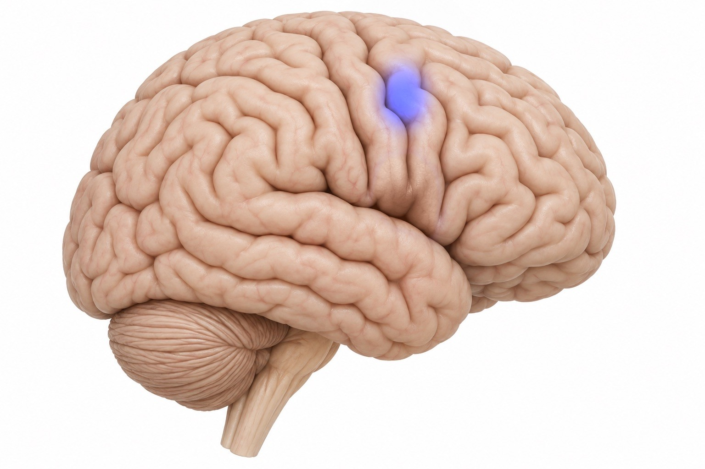
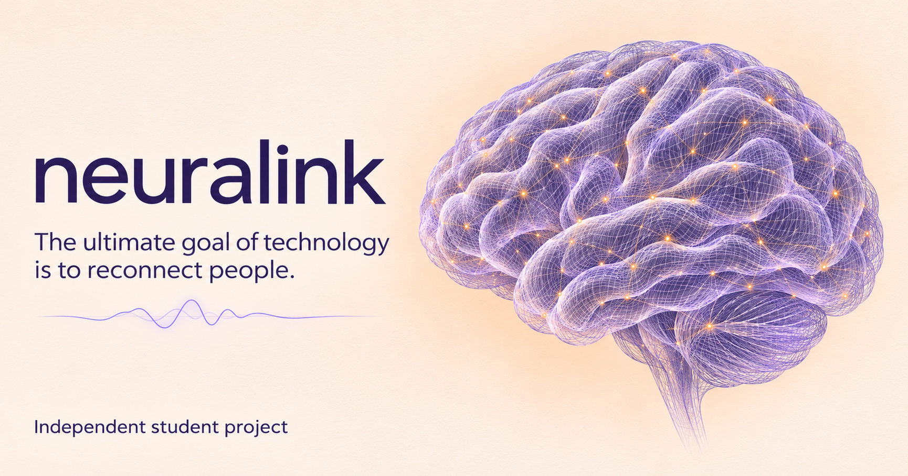

Speech motor cortexThe speech motor cortex helps coordinate speaking. Neuralink’s implant records neural activity from this region.

START WITH THE PERSON. EXPLORE THE TECHNOLOGY.
Explore how a brain implant can help turn neural signals into words.
CHOOSE YOUR 3D EXPERIENCE
Choose a character to explore how a brain signal becomes a sentence.
NEURALINK’S SPEECH RESTORATION EXPLANATION

Speech motor cortexThe speech motor cortex helps coordinate speaking. Neuralink’s implant records neural activity from this region.
A participant tries to speak or imagines speaking. A trained decoder interprets patterns in the recorded activity and produces a continuing sequence of words.
The output can appear on a device as text or be synthesized as speech. Neuralink describes a personalized voice option to support everyday conversation.
Media: Neuralink. Explanations summarized from its official speech-restoration page ↗.
These official demonstrations are separate from our 3D story’s Stanford research replay and standard synthetic voice.